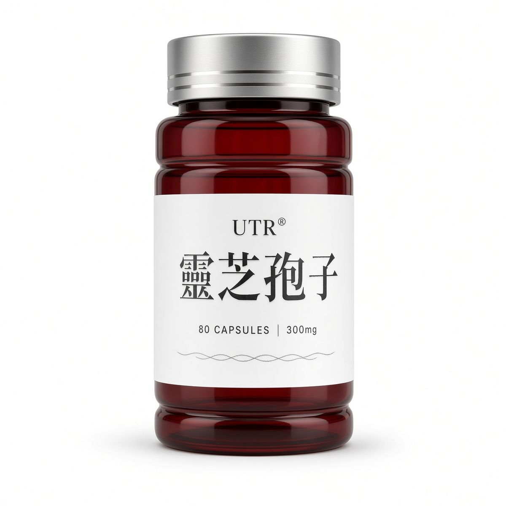
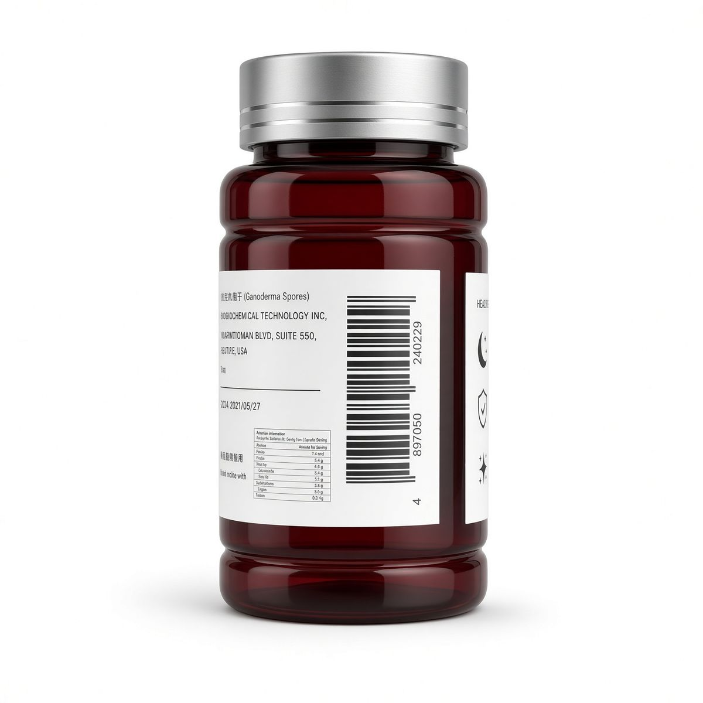
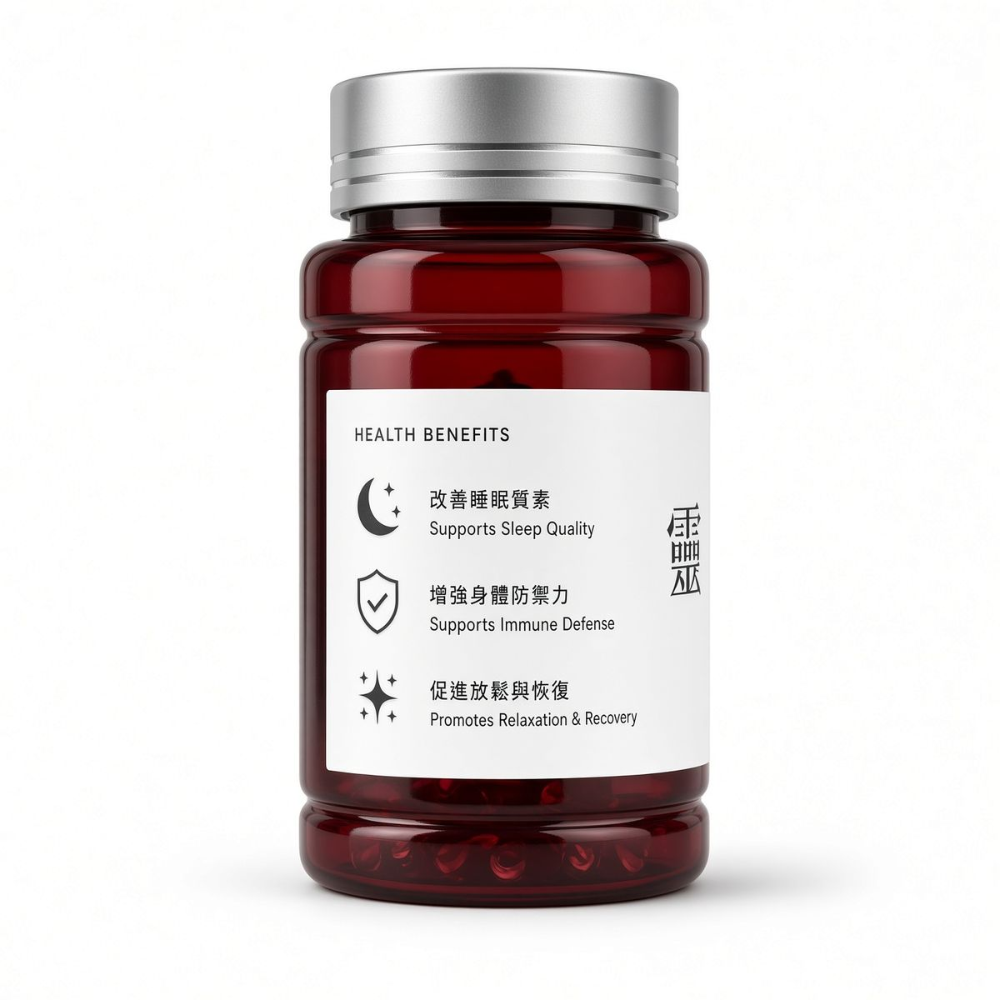
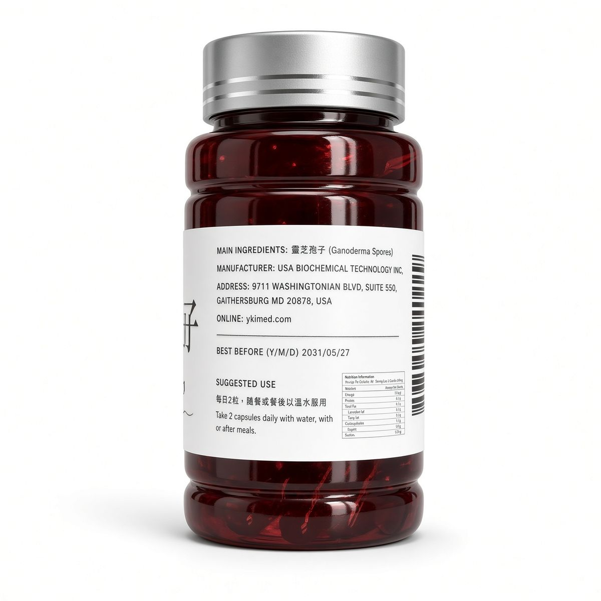
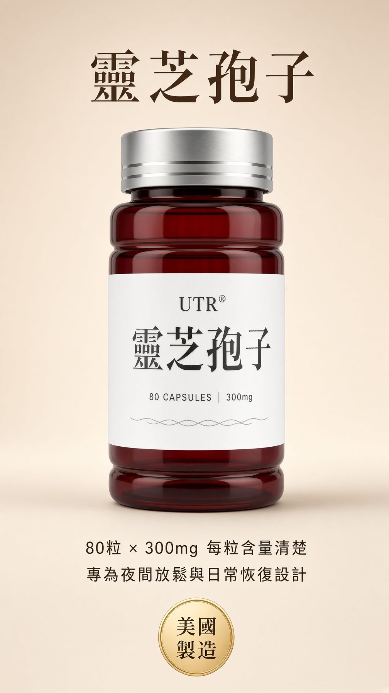
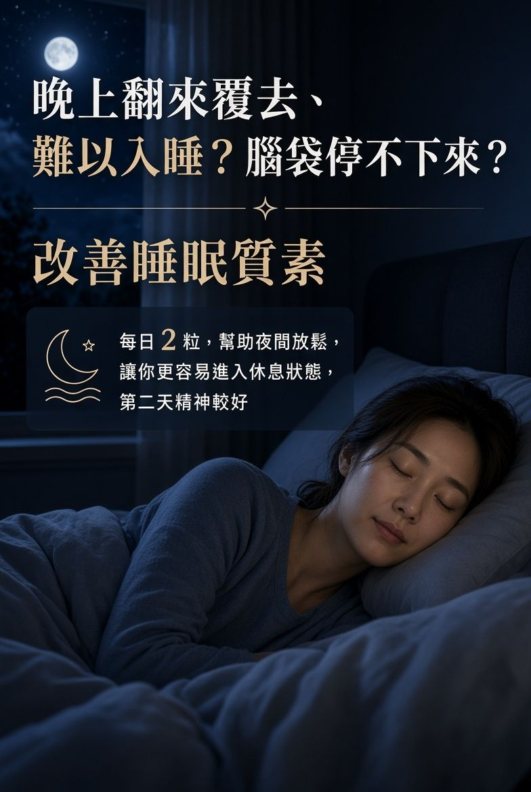
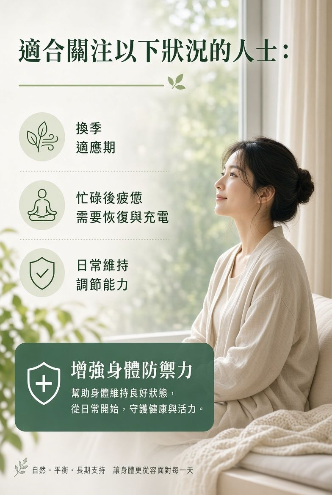
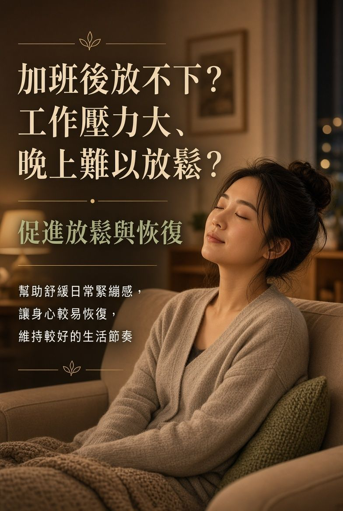
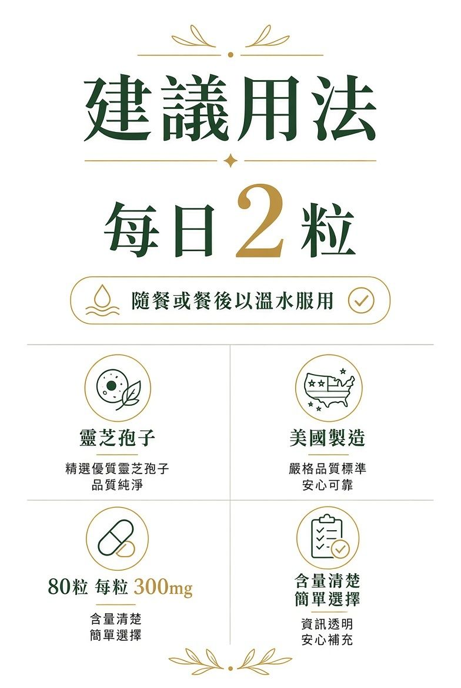

首頁 › 所有產品 › UTR 靈芝孢子 80粒 300mg

UTR · 美國製造 · 口服 · 每粒 300mg
美國製造靈芝孢子，每粒 300mg、含量清楚。專為夜間放鬆與日常恢復而設——改善睡眠質素、促進放鬆恢復、增強身體防禦力。
本站為產品說明頁，不設即時購買。價錢與庫存以 HKTVmall 當日為準。
以下詳圖取自 HKTVmall 盈康店舖同一 SKU（H6838001_S_UTR-GS-80-300），可直向滑動瀏覽。









UTR 靈芝孢子 80粒 300mg，美國製造——夜間放鬆、日間恢復、防禦力日常維持，一瓶對應睡眠與免疫雙需求。
改善睡眠・增強免疫
相關搜尋關鍵字：UTR 靈芝孢子、靈芝孢子 300mg、靈芝孢子功效、靈芝孢子好處、改善睡眠、增強免疫、美國製造靈芝孢子、香港靈芝孢子、盈康 UTR、H6838001_S_UTR-GS-80-300
難以入睡・淺睡易醒
加班壓力放不下
換季關注防禦力
日間疲憊・精神不濟
完整成分表與過敏原資訊請以產品包裝及 HKTVmall 商品頁為準。
專為夜間放鬆與日常恢復設計，幫助更容易進入休息狀態。
增強身體防禦力敘述，適合換季或特別關注身體狀態時。
產地清楚、每粒 300mg，減少選購時的不確定感。
每日 2 粒、80 粒裝，容易納入固定輕養生習慣。
| 建議用法 | 每日 2 粒，隨餐或餐後以溫水服用。 |
|---|---|
| 劑型 | 口服膠囊／粒劑（80粒裝） |
| 含量 | 每粒 300mg |
| 保存 | 請置於陰涼乾爽處（約 25°C 以下），避免陽光直射，並放於兒童接觸不到的地方。 |
| 注意 | 孕婦、兒童及長期病患者請先諮詢專業意見。服用前請閱讀包裝標示。 |
| 產品名稱 | UTR 靈芝孢子 80粒 300mg（美國製造） |
|---|---|
| 品牌 | 盈康／UTR |
| 分類 | 保健產品 · 免疫系統 · 口服 |
| 產地 | 美國製造 |
| 包裝 | 80粒裝，每粒 300mg |
| SKU | H6838001_S_UTR-GS-80-300 |
| 店舖編號 | CY36095（HKTVmall 目錄） |
| 售價 | HK$198（原價參考 HK$298；以 HKTVmall 當日為準） |
尹淑梅中醫師（從醫五十多年・香港註冊中醫師）支持盈康「說明可查、日常可依」的輕養生理念。其榮譽包括香港中國醫藥研究院榮譽院長、香港中國醫藥學會永遠榮譽會長，並榮登《世界名人錄》及傑出英才錄。
推薦反映品牌理念認同。